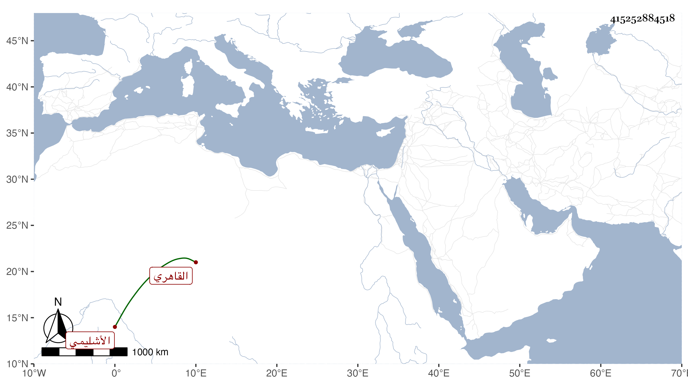

0902Sakhawi.DawLamic.ITO20230111-ara1.EIS1600.415252884518
Biography ID: 415252884518
399
أحمد بن محمد بن عثمان بن أيوب شهاب الدين الأشليمي ثم القاهري أخو الشرف محمد الأصيلي والنور علي الأشليمي ووالد النجم محمد . نشأ فقرأ القرآن وتكلم في أوقاف أخيه فحمد تصرفه وطاب أمره مع تقصيره عن أخويه في الاشتغال في الجملة وتأخره عنهما في السن وله حرص على الجماعة وإقبال على شأنه وملازمة لتصوفيه ووظائفه .
